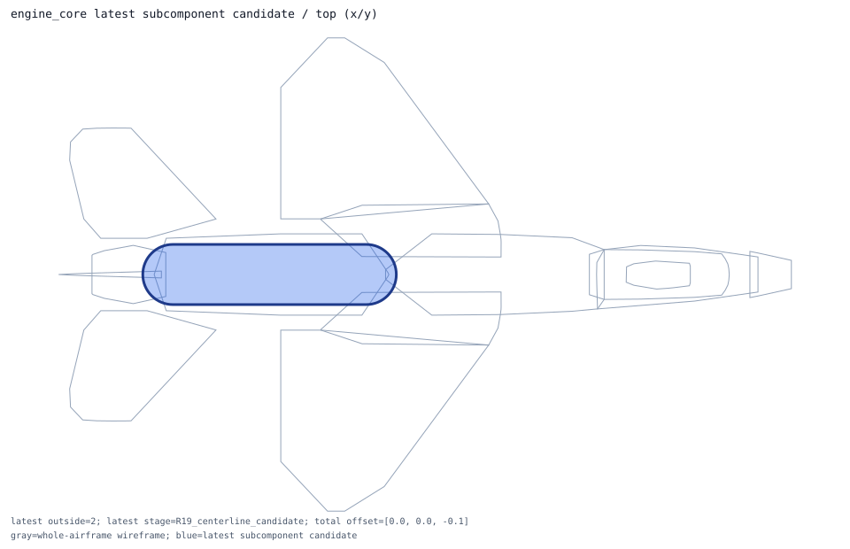
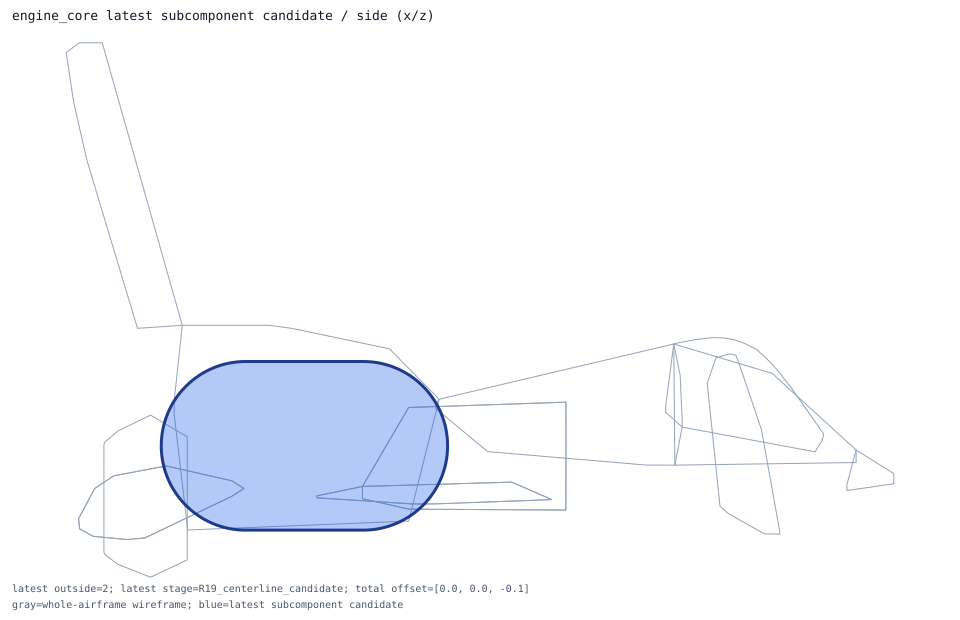
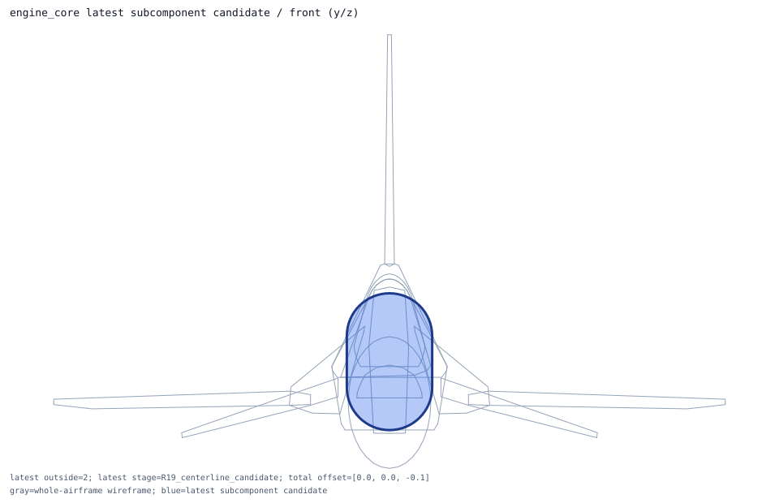

engine_core
capsule -> rounded_engine_axis_capsule; shape_candidate_does_not_reduce_exposure_requires_new_placement_model
Candidate Details
- item: engine_core
- type: receiver_prior
- system: engine
- role: cross_region_engine_receiver
- current shape: capsule axis=x
- candidate evaluation shape: capsule axis=x
- nominal dimensions m: [4.62026, 1.1811, 1.1811]
- dimension policy: preserve_nominal_public_or_declared_prior_dimensions_no_shrink
- placement policy: preserve_public_engine_length_and_diameter_while_testing_rounded_axial_envelope
- current outside samples: 3
- candidate outside samples: 3
- candidate center shift m: 0.0
- centerline candidate offset m: [0.0, 0.0, -0.1]
- centerline candidate center m: [-3.693053, 0.0, -0.654381]
- centerline candidate outside samples: 2
- centerline candidate status: centerline_candidate_reduces_exposure_requires_followup_geometry
- centerline candidate action: keep_centerline_candidate_as_intermediate_and_research_cross_section_or_true_centerline
- latest candidate stage: R19_centerline_candidate
- latest candidate center m: [-3.693053, 0.0, -0.654381]
- latest candidate outside samples: 2
- latest candidate status: latest_candidate_still_exposes_silhouette_requires_geometry_model
- latest candidate action: keep_runtime_inactive_and_design_new_section_or_envelope_model
- recommended action: design_new_size_or_centerline_model_before_runtime_activation
- rationale: engine receiver should preserve the public F110 axial length/diameter semantics; a rounded capsule is a safer candidate than an arbitrary box.
- centerline rationale: local silhouette search clears the rounded engine envelope with a small downward centerline correction, but cross-region ownership remains held.
- latest rationale: local silhouette search clears the rounded engine envelope with a small downward centerline correction, but cross-region ownership remains held.


